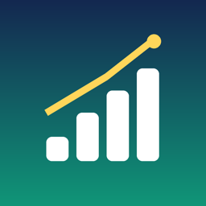

Finanz Tracker
Apple Pay und Kontoauszüge automatisch erfasst – Budget, Fixkosten und Sparziel im Griff. · Apple Pay and bank statements captured automatically – budget, fixed costs and savings goal under control.
Support
Fragen oder Ideen / questions or ideas: timon.duodu@icloud.com
Kontoauszug wird nicht erkannt? · Statement not recognised?
Schick uns einen geschwärzten Auszug deiner Bank (Namen, IBAN und Beträge darfst du unkenntlich machen) an timon.duodu@icloud.com. Wir bauen das Format so schnell wie möglich ein. · Send us a redacted statement from your bank (names, IBAN and amounts may be blacked out) and we will add the format as soon as possible.
Unterstützte Formate · Supported formats
CSV-Exporte von über 40 Banken (UBS, PostFinance, Raiffeisen, ZKB, Migros Bank, Neon, Yuh, Revolut, Wise, N26, DKB, Sparkasse, ING, Commerzbank, Monzo, Starling, Barclays, Chase, Bank of America, Amex, PayPal, Nordea, Intesa, BNP, Santander …), camt.052/053/054 (ISO 20022), MT940, OFX/QFX, QIF sowie PDF-Auszüge von Luzerner und Zuger Kantonalbank.
Häufige Fragen · FAQ
Wo liegen meine Daten? Nur auf deinem iPhone (App-Gruppe für das Widget). Kein Konto, kein Server. · Where is my data? Only on your iPhone (app group for the widget). No account, no server.
Abo kündigen? In den Einstellungen deines Apple-Kontos unter „Abonnements“. · Cancel the subscription? In your Apple account settings under “Subscriptions”.